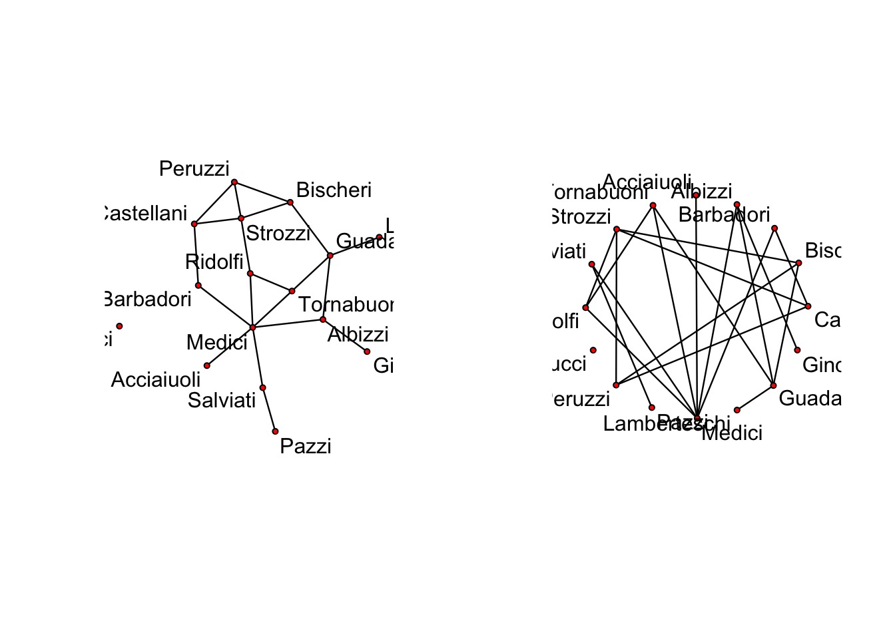

Chapter 3 STATNET Overview
Using the network package to handle Network objects.
Basics in getting and loading a network example data-set:
library(network) # Make sure that network is loaded
# help("network-package") to get started.
data(package="network") # List available datasets in network
data(flo) # Load a built-in data set; see ?flo for more
flo # Examine the flo adjacency matrixFirst find the files “flo.paj” and “floadj.txt” that come within the network package:
First we will attempt to bring in a .txt file:
flo.paj.location <-"http://vlado.fmf.uni-lj.si/pub/networks/data/GD/gd98/A98.net"Try reading in a Pajek file:
flopaj <- read.paj(flo.paj.location)Write to table
write.table(flopaj[,],file="data/floadj.txt")
floadj.txt.location <-"data/floadj.txt"Then read them into adjacency matrix form:
floadj <- read.table(floadj.txt.location,header=TRUE)
floadj Some other common commands and calls for network class types:
names(flopaj) # This is a project file, with networks and other data
names(flopaj$networks) # See which networks are in the file
nflo2 <- flopaj$networks[[1]] # Extract the marriage data
nflo2 # Examine the network objectLoad “native” R data file( note, may need to change directory).
load("data/nmlec1.Rdata") # Load example data
mids_1993 # Examine one of the imported objectsExample 3.2 Other useful R commands in the network package. As always one can delve deeper into these functions via R’s help manuals (either ? or help() ).
One of the first things we should look at is network objects, here is a quick example of how to create a network object and pull out some basic network properties.data(flo)
nflo <- network(flo, directed=FALSE)
nflo # Get a quick description of the data
summary(nflo) # Get an overall summary
print(nflo) # Simple print method
network.dyadcount(nflo) # How many dyads in nflo?
network.edgecount(nflo) # How many edges are present?
network.size(nflo) # How large is the network?
as.sociomatrix(nflo) # Show it as a sociomatrix
nflo[,] # Another way to do itAn example plot generated by the plot.network() command. The plot on the left is the default Fruchterman and Reingold’s force-directed placement algorithm, where the plot on the right is a circle output. More layouts and information can be found with gplot function.
par(mfrow=c(1,2))
plot(nflo,displaylabels=T,boxed.labels=F)
plot(nflo,displaylabels=T,mode="circle", boxed.labels=F) 
``` Generating an empty network can be useful for a number of things. %add things
# Create an empty graph with 5 vertices
nempty <- network.initialize(5)
nempty # Compare with nflo Now, we can look at some basic network properties such as edges.
g <- network.initialize(5) # Create an empty graph
g[1,2] <- 1 # Add an edge from 1 to 2
g[2,] <- 1 # Add edges from 2 to everyone else
m <- matrix(0, nrow=5, ncol=5)
m[3,4:5] <- 1 # Add entries from 3 to 4 and 5
g[m>0] <- 1 # Add more entries
g[,]